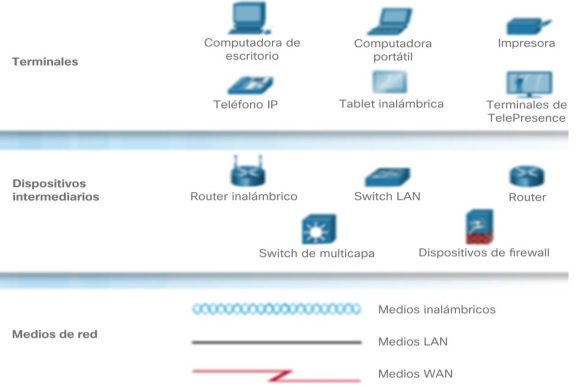
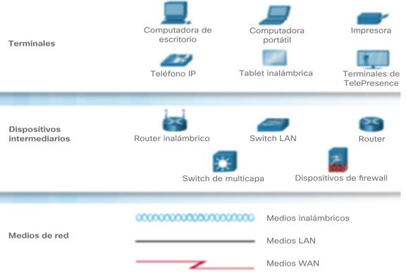
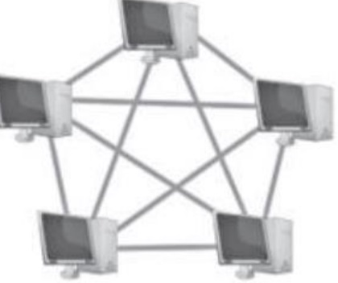

Es el conjunto de instrumentos empleados para manejar informacion por medio de la computadora como el prosesador de texto, la base dedatos, graficadores, correo electronico, hojas de calculo, buscadores, progamas de diseño, presentadores, redes de telecomunicaciones, etc
Son el conjunto de recuersos, herramientas, equipos. progamas informaticos, aplicaciones,redes y medios que permitan la comunicacion, procesamiento,almacenamiento, trasmicion, de informacion como voz,datos, texto, video e imagenes en pro de la eficiencia y la agilidad
| Ventajas de las TIC | Desventajas de las TIC | ||
|---|---|---|---|
| En la educacion |
Acceso adiversas fuentes de informacion.
Comunicacion en el tiempo real. Mayor interracion. Desarrollo de nuevas habilidades fuera del curruculo oficial. Aprendezaje personalizado. |
Riesgo de desigualdad y exclusion.
Puden ser una fuente de distraccion.
Acceso a informacion de baja calidad.
Dismnuyen las habilidades manuales.
|
|
| En la sociedad |
Democratizacion del acceso a la informacion
Optimizacion de tramites burocraticos Acceso a productos y servicios sin limites geograficos Acceso a nuevas tecnologias a precios accesibles |
Peligro de exposicion de datos personales.
Acceso a informacion falsa. Exclusion y desigualdad. | |
| En las empresas |
Eficiencia en la toma de deciciones.
Nuevas modalidades de tabajo. Nuevas oportunidades de crecimiento |
Reduccion de puestos de trabajo. Riesgo de ciberataques. | |
| En el hogar |
Facilitan la comunicacion.
Permiten el acceso a la educacion y el trabajo |
Menos interaccion familiar.
Contenido inapropiado. |
Los beneficios de las tic en la gestion de empresas te brindan la oportunidad de analizar datos especificos para planificar negocios.tambien te ofrecen diversas herramientas resoliutivas para los problemnas mas completos y para planificar de tu negocio
Es un conjunto de computadoras y software que estan conectadas por dispositivos que reciben y envian informacion por trasmicion guiada, inalambrica o satelites de comunicacion con el objetivo de compartir recuersos como datos, progamas y hadware.

| ventajas | desventajas |
|---|---|
|
Compartir sofware y hardware.
Compartir e intercambiar archivos entre los equipos. Centralizar los progamas de gestion(los usuarios pueden acceder al mismo progama y la disponibilidad Realizar copias de seguridad auntomaticamente. Organizacion efetiva. Mejora la comunicacion y dsiponibilidad de informacion Una vez implementadas son economicas y ahorran tiempo Comunicacion rapida y eficiente Posibilidad de manejo y control distancia de nuestraa computadora Mejora la forma de trabajo individual y en equipo |
Carecen de independencia
Exiten muchos riesgos por lo que se deben tomar muchas medidas de seguridad Se requiere personal capacitado para la administracion y el mantenimiento de las redes El costo para implementacion inicial es alto. Costos de operacion y mantenimiento Si se depende de la conexion a internet y falla, se pueden ver las consecuencias entiempo dinero y esfuerzo |
Cada computadora conecta a una red se denomina host o terminal
Los servidores de computadora que se proporcionan informacion a los terminales de la red. por ejemplo servidores de correo electronico, servidores de archivos.
Los clintes son computadoras que envian solicitudes a los servidores para recuperar informacion, como una pagina web desde un servidor web o un correo electronico desde un servidor desde un servidor de correo.
La infraestructuraa de red son todos los recursos que hacen posible la conectividad, la gestion, las operaciones comerciales y la comunicacion de la red o internet. la infraestructura de red comprende hardware y software,sistemas y dispositivos, permite la informacion y la comunicacion de usuarios, seervicios, aplicaciones y procesos.
 

los datos se origin con un dispositivos final, influyen por la red y llegan a un dispositivo final.
| medio | ventajas | desventajas |
|---|---|---|
| cable coaxial |
permite la trasmision de voz datos y videos de manera simultanea.
tiene un bajo costo y instaalaacion es sencilla y rapida cuenta con unaa banda ancha con capacidad de 10 Mb/segundo |
no hay modelacion de frecuencias
hace uso de conectores especiales para la comunicacion fisica ofrece pocaa inmunidad frente a los ruidos,anque pude mejorarse con filtros |
| cable de par trenzado( |
dan buenas pressentaciones para el area local
facilidad de utilizacion e instalacion bajo costo de fabricacion y adquisicion gran capacidadreapidad de trasmision de datos en redes de area rapida conectividad y actualizaje |
no son inmunes al ruido
ancho de banda limitado distancia limitada y necesidad de repartidores tasas de error a considerar en las altas velocidades |
| fibra optica |
ocupa poco espoacio
facil istalacion es liviana presenta una gran resitencia es mas ecologica inmune a interferencias electromacneticas veloz, eficaz y segura |
mas costoso que los medios de cobre para la misma distancia
son mas fragiles Require de conversadores Envejece ante la presencia de agua |
| Inambrico |
Accesibilidad
Facil instalacion Mayor covertura Flexibilidad Movil y portatil Escalabilidad Eficiencia |
Seguridad
Ancho de banda limitado velocidad Son propensas alas interferencias Alcance |

| red | Definicion | Alcance |
|---|---|---|
| red de area local(LAN). | Es una red que se limita a un area relativamente pequeña tal como un cuarto,un solo edificio. | 200 m a 1 km |
| redde area amplias(wan). | Son redes unformaticas que se extienden sobre un area geografica muy extensa, pais continentes. utilizando medios como: satelites, cables,interoceanicos y fibra optica | Miles de kilometros |
| Red dee area personal(PAN). | Es una red de ordenadores usada para la comunicacion entre los dispositivos de la compuadora cerca de una persona. | 10 metros |
| Red de area metropolitana (MAN) | Es un red de alta velocidad((banda ancha ) que seda cobertura en un area geografica mas extensa,por ejmplo, una red que interconecte las edificios publicos de un municipio dentro de la localiadad por medio de la fribra optica | hasta 50 kilometros |
| Red de area global (GAN) | Utiliza la infraestructura de fibra de vidrio de las redes de area amplia (wide area networks) y las gggrupan mediante cables submarinos internacionales o trasnmision por satelite. | miles de kilometros |
| Red de area de campos (CAN) | Es una red inalambrica para comunicar varios beneficios que se encuentran a mas de 1km en el mismo campus o empresa. | 1 a 3 km de una red de area de campos |
| Red de area de almacenamienrto (SAN) | es una red propia para las empresas que trabajan con servidores y no quieren perder rendimiento en el trafico de usuario, ya que manejan una enorme cantidad de datos | Ilimitado |
todos lo nodoos de red se conectan a un solo cable principal,que sirve a todos

son redes punto a punto en las que cada nodo esta conectado a su vecino inmediato en ambos lados, con datos que viajan alrededor del anillo enuna direccion hasta que se alcanza el nodo correcto. la falla de son solo nodo provocara una interrupcion en toda la red. esta noo require un servidor para administrarla

todos los nodos se conectan aun solo punto central

las topologias de arbol son una evolucion del modelo de estrella e involucran multiples redes estelares unidas por un bus central. las redes de arbol generalmente se consideran como la toppologia mas escalable, ya que es mas

es cuando hay mas de una conexion entre nodos. esta pudes ser una topologia de malla completa, en la que cada nodo esta vinculado a casa otro nodo,o una malla parcial, en la que solo algunos nodos utilizan conexiones multiples. esta forma de red es compleja de configuarar y administrar, pero incluye un alto nivel de redundancia
internet es un conjunto descentralizado de redes de comunicaciones internacionales, que utilizan la familia de proto
Una página web, página electrónica o página digital es un documento digital de carácter multimediático (capaz de incluir audio, video, texto y sus combinaciones), adaptado a los estándares de la World Wide Web (WWW) y a la que se puede acceder a través de un navegador Web y una conexión activa a internet. Las páginas Web se encuentran almacenadas en servidores a los que es posible acceder velozmente gracias a un sistema de protocolos de comunicación (HTTO). Las páginas Web se encuentran programadas en un formato HTML o XHTML, y se caracterizan por su relación entre unas y otras través de hipervínculos. Las páginas Web cumplen con la tarea de brindar información de cualquier índole y en cualquier estilo o grado de formalidad. Algunos permiten distintos grados de interacción entre usuarios o con alguna institución, como son las páginas de foros, servicios de citas o redes sociales, las páginas de compra y venta de bienes, las páginas de consulta o de contacto con empresas, instituciones gubernamentales o con ONG, e incluso de páginas de soporte técnico especializado.
| tipo de pagina | estatica | dimanica | caracteristicas |
se progaman en lenguaje HTML.
no permite la interacion con el usuario son informativas, documentales y no intercativas. |
se progaman en lenguaje PHP
permite la interaccion con el usuario ofrece una respuesta a los requerimientos del usuario. |
|---|
el comercio electronico o ecomers es el concepto de bienes y servicios en internet. internt permite a individuos y empresas comprar y vender una cantidad cada vez mayor de bienes fisicos,bienes digitales y servicios de forma electrónica. el comercio electronico conecta vendedores cin clientes y permite intercambios a traves de internet. puede funcionar de muchas maneras y adoptar varias formas.
el comercio apraece desde que comienzan las relaciones humanas.